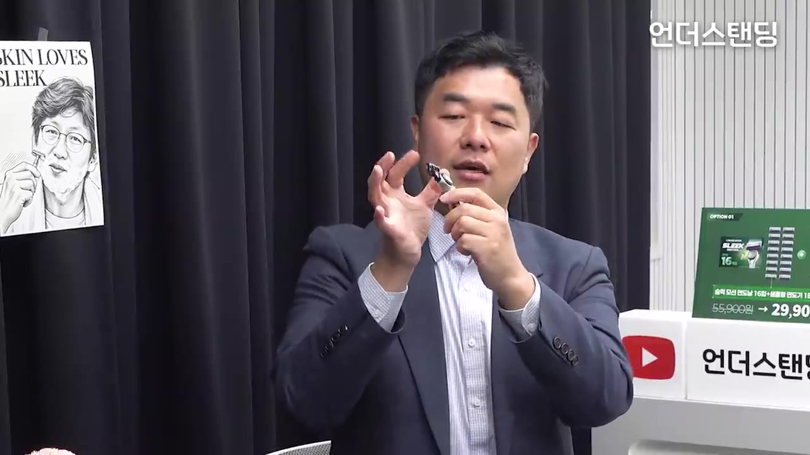
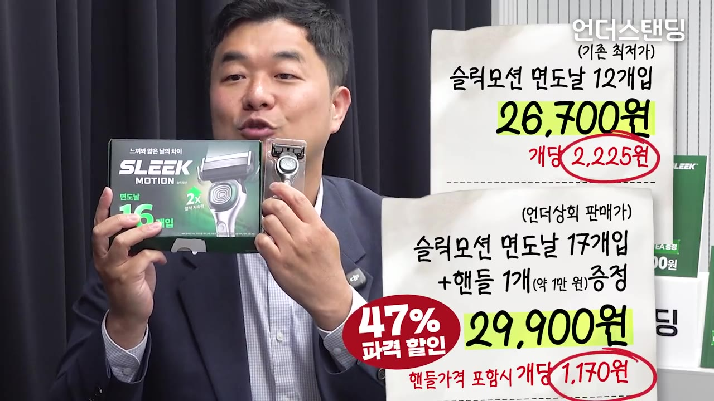
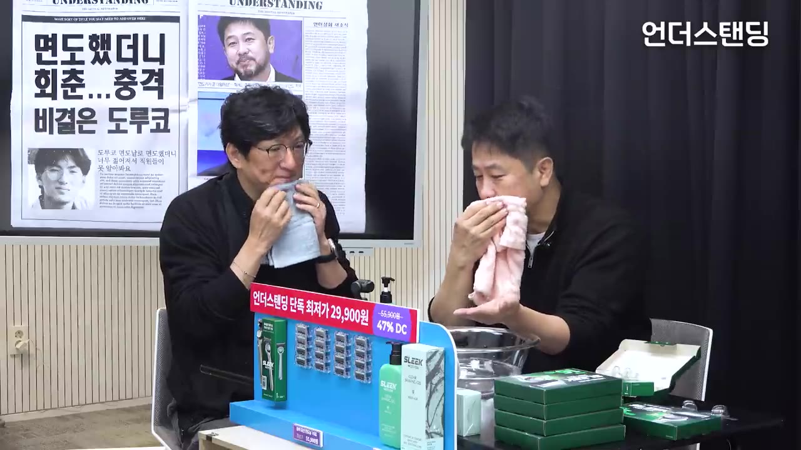
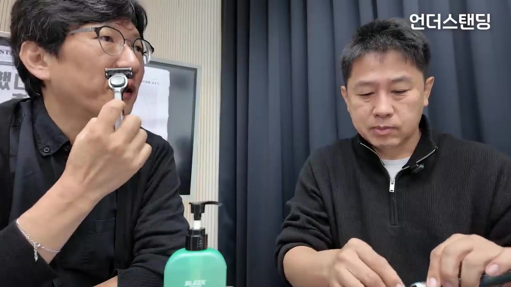

[언더상회] 매일 쓰는 면도기에 숨은 과학 (국산 면도기 '슬릭 모션' 쿠팡보다 47% 싸게 1주일만 팝니다)
▶ 원본 영상 보기한눈에 보기
- 언더스탠딩이 도루코 프리미엄 면도기 '슬릭 모션'을 소개하고 판매하는 커머스 방송이며, 제품 설명은 도루코 직원(김기수 선임)의 주장입니다.
- 슬릭은 도루코 날 중 가장 얇은 날, 가장 두꺼운 코팅, 6중날, 상하좌우와 안쪽으로 움직이는(댐핑) 헤드를 내세웁니다.
- 면도날은 코팅이 깨지면 성능이 떨어지므로 도루코 연구소 기준 약 15회 사용 후 교체를 권합니다.
- 비누보다 약산성 쉐이빙 젤이 좋다고 하며, 따뜻한 물로 불린 뒤 결 방향으로 먼저 밀고 역방향으로 마무리하라고 합니다.
- 판매 구성은 날 16개 + 날 1개 끼운 핸들(총 17개) 29,900원, 쉐이빙 젤 9,900원 추가 옵션이며 1주일 한정입니다.
이런 분께 도움이 됩니다
- 면도날 교체 주기, 비누와 젤 중 무엇을 쓸지 헷갈리는 분
- 슬릭·슬릭 모션·슬릭 엣지 차이와 이번 할인 구성이 실제로 싼지 판단하려는 분
핵심 내용
시장 구도와 '슬릭'이 나온 이유
- 도루코 직원에 따르면 국내 면도기 점유율은 1위 질레트, 2위 도루코, 3위 쉬크입니다. (3:06)
- 점유율 비율은 자막상 "631"로 6:3:1로 보이나, 정확한 단위는 불분명합니다. (3:29)
- 국내에서 면도날을 직접 만드는 곳은 도루코와 아주 작은 업체 하나뿐이라고 합니다.
- 슬릭은 도루코의 최신 최고급 라인입니다. 군용 면도기 이미지가 강한 '도루코' 이름을 일부러 빼고 젊은 층에게 새로운 느낌을 주려 했다고 설명합니다. (3:53)
- 진행자는 현대차가 제네시스를 따로 만든 것에 비유했습니다.
- 출시 이후 도루코의 점유율 상승폭이 크다고 직원은 주장합니다.
면도날 기술 3가지: 얇은 날, 코팅, 밀착
- 얇은 날: 도루코가 가진 날 중 가장 얇습니다. 낫처럼 날이 얇을수록 털에 쉽게 파고들어 부드럽게 잘린다는 설명입니다. (5:01)
- 코팅: 날이 얇으면 강도가 약해질 수 있어 가장 좋고 두꺼운 코팅을 입혔다고 합니다.
- 밀착: 헤드가 상하좌우 3D로 움직이고, 스프링으로 안쪽까지 들어가는 댐핑 기능이 있어 피부 밀착이 가장 좋다고 합니다. (5:26)
- 직원이 꼽은 핵심 기술은 날을 얇게 가는 연마, 코팅 유지, 핸들 움직임입니다. 여기에 균일한 품질로 수천만 개를 대량생산하는 것이 가장 어렵다고 덧붙였습니다.
- 직원은 질레트 최고급 제품과 블라인드 테스트를 하면 일반인은 거의 구분하지 못할 것이라고 주장했습니다. 방송에서 실제 테스트는 하지 않았습니다.
6중날을 고른 이유
- 날이 많을수록 절삭력이 올라갑니다. 앞날이 털을 물고 당기면 뒷날들이 연속으로 자르기 때문입니다. (14:09)
- 다만 헤드가 세로로 길어지면 인중처럼 좁은 곳을 밀기 어려워 넣을 수 있는 날 수에 한계가 있습니다.
- 직원은 질레트는 최대 5중날인데 도루코는 같은 공간에 6중날을 넣었다고 주장합니다. 7중날 제품도 있지만 6중날이 더 부드러워 최선이라고 봤습니다. (14:33, 14:55)
💡 날 수보다 좁은 공간에 균일하게 많이 넣는 기술이 핵심이라는 주장입니다.
핸들 무게감
- 너무 가벼우면 일회용 같고, 너무 무거우면 쓰기 힘들어 적당한 묵직함이 중요하다는 것이 진행자 의견입니다.
- 직원 설명으로는 고가 제품일수록 핸들에 금속 성분을 넣고, 저가일수록 플라스틱 비율이 높습니다. (8:02)
면도날은 자주 갈아야 하는 이유
- 면도날은 스테인리스 날 위에 금속 코팅, 그 위에 폴리머(흔히 말하는 테프론) 코팅을 입힌 구조입니다. (8:24)
- 테프론 코팅 덕분에 금속이 피부에 직접 닿지 않아 쓰라리지 않습니다.
- 테프론은 쉽게 깨지므로 자주 갈아야 성능이 유지된다고 합니다.
- 코팅이 벗겨진 날은 털을 밑동에서 자르지 못하고 미끄러지듯 비스듬히 자릅니다. 거울로는 깨끗해 보여도 햇빛 아래에서 다른 사람에게는 지저분하게 보인다고 진행자가 설명했습니다. (10:18)
- 교체 주기는 다음과 같습니다.
| 기준 | 날 1개 사용 기간 |
|---|---|
| 1위 회사(질레트) 패키지 표기 | 한 달 |
| 도루코 연구소 권장 | 약 15회 (매일 쓰면 약 2주) |
- 15회쯤 쓰면 현미경으로 봤을 때 코팅이 깨져 있다고 합니다. (11:27)
- 직원에 따르면 가장 비싼 면도날은 쿠팡 최저가 기준 개당 약 5,300원입니다.
비누 대신 쉐이빙 젤을 쓰라는 이유
- 비누가 좋지 않은 이유는 두 가지라고 합니다. (15:41)
- 비누의 지방 성분이 수돗물의 미네랄(자막상 '석무질')과 만나 굳고, 그 찌꺼기가 날과 날 사이에 끼어 성능을 떨어뜨립니다.
- 수염은 단백질이라 산성에서 부드러워지는데(연모 효과: 털을 부드럽게 하는 효과), 비누는 알칼리성이라 이 효과가 없습니다.
- 쉐이빙 폼은 지방산 함량이 비누의 절반 수준이라 날에 덜 끼고 잘 헹궈집니다.
- 젤은 폼보다 미끄러짐(글라이딩)이 좋다고 합니다. 이번 젤은 거품이 안 생겨 수염을 보면서 정밀하게 면도할 수 있다고 소개했습니다. (16:48)
- 알로에 성분이며, 화장품 회사에 위탁생산한 제품입니다.
- 물 없이 날로만 면도하면 날이 일주일도 못 간다는 데 진행자와 직원 모두 동의했습니다.
| 구분 | 영상 속 설명 |
|---|---|
| 비누 | 알칼리성, 연모 효과 없음, 지방이 굳어 날에 낌 |
| 쉐이빙 폼 | 지방산이 비누의 절반, 헹굼이 잘 됨 |
| 쉐이빙 젤 | 약산성, 가장 미끄러움, 거품이 없어 수염이 보임 |
💡 직원은 면도 품질을 면도기 7, 면도 전 준비 3으로 봤습니다. 좋은 보조용품보다 털을 충분히 불리는 환경이 중요하다는 의미입니다. (18:08)
슬릭 vs 슬릭 엣지 vs 슬릭 모션, 호환성
- 엣지와 모션의 차이는 다음과 같습니다. (22:42)
| 구분 | 슬릭 엣지 | 슬릭 모션 |
|---|---|---|
| 헤드 움직임 | 앞뒤로만 | 좌우 + 안쪽으로 들어가는 댐핑 |
| 날 | 별도 | 코팅이 더 오래 가도록 업그레이드, 포장에 '2X 절삭력' 표기 |
| 쿠팡 가격 | 상대적으로 저렴 | 조금 더 비쌈 |
- 슬릭 시리즈끼리는 날이 호환되어 엣지 핸들에 모션 날을 끼울 수 있습니다. 진행자는 핸들은 오래 쓰니 모션으로 사라고 권했습니다.
- 이전 모델인 '도루코 페이스' 날은 슬릭에 맞지 않습니다. (24:48)
- 페이스는 날 중간에서 핸들과 연결되고, 슬릭은 날 아래쪽(6~7번째 날 근처)에서 연결됩니다.
- 그래서 위쪽이 트여 헹굼(린싱)이 잘 되고 밀착도 좋아졌다고 설명합니다. 직원은 기존 고객에게 미안하다고 했습니다.

판매 구성과 가격 (1주일 한정)
| 구성 | 방송 가격 | 방송에서 비교한 가격 |
|---|---|---|
| 슬릭 모션 날 16개 + 날 1개 끼운 핸들 (총 17개) | 29,900원 | 쿠팡: 날 12개 26,000원 (핸들 없음) |
| 쉐이빙 젤 (선택) | 9,900원 | 쿠팡 최저가 14,900원 |
| 둘 다 | 39,800원 |
- 1주일만 판매하며, 영상 설명란의 언더상회 링크로 사야 이 가격이 적용됩니다. 쿠팡 쪽 항의가 오면 일찍 닫을 수도 있다고 했습니다. (27:48)

따라 해보기
준비물
- 면도기와 교체할 새 면도날 (영상은 슬릭 모션 기준이지만 방법은 어느 면도기나 같다고 함)
- 따뜻한 물(미지근한 물)
- 쉐이빙 젤 또는 쉐이빙 폼 (비누 대신)
- 소요 시간: 몇 분
단계별 방법
🔁 영상에서 권한 면도 순서
- 날 상태 확인
- 수염 불리기
- 젤 바르기
- 결 방향 면도
- 역방향 마무리
- 헹구기
- 1날 상태 확인
날을 15회 정도 썼다면 새 날로 바꿉니다. 도루코 연구소 권장 기준입니다. (11:27)
- 2수염 불리기
미지근한 물을 얼굴에 적시고 피부에 10초 정도라도 대고 있습니다. (18:43)

진행자들이 젖은 수건을 얼굴에 대고 수염을 불리는 모습 · ▶ 18:54 - 3젤 바르기
물을 바른 위에 젤을 한 번 쭉 짜서 면도할 부위 전체에 펴 바릅니다. 물 없이 젤만 바르지 않습니다. (18:55)
- 4결 방향 면도
위에서 아래로, 수염이 자라는 방향으로 전체를 한 번 밉니다.
- 한두 번만 지나가도 충분하며, 여러 번 반복해서 밀 필요는 없다고 합니다.

진행자가 슬릭 면도기로 직접 면도하는 시연 · ▶ 19:28 - 5역방향 마무리
덜 깎인 부분만 역방향(아래에서 위로)으로 마무리합니다.
- 6헹구기
날 사이에 낀 것을 물로 헹궈 냅니다. 영상에서는 짧게만 언급되었습니다. (보충)
따라 할 수 있는지 점검
- ✅ 바로 따라 할 수 있음: 물로 불리기, 젤 바르기, 결 방향 후 역방향 순서
- ⚠️ 1단계 「날 상태 확인」: '15회'는 도루코 기준이고, 질레트는 '한 달' 표기라 회사마다 다릅니다 → 쓰는 제품 포장의 권장 기간을 확인하고, 사용 횟수를 달력이나 메모로 세면 됩니다. (보충)
- ⚠️ 2단계 「수염 불리기」: 물 온도는 '미온수', 시간은 '10초라도'로만 나옵니다 → 손등에 대 뜨겁지 않은 정도로 맞추면 됩니다. (보충)
- ⚠️ 5단계 「역방향 마무리」: 역방향 면도가 피부 자극을 키울 수 있다는 주의는 영상에 없습니다 → 피부가 예민하면 역방향은 생략하거나 최소로 하면 됩니다. (보충)
- ⚠️ 면도 후 관리(로션 등)는 영상에서 생략되었습니다.
확인 방법
- 면도 후 손으로 쓸었을 때 걸리는 털이 없고, 쓰라림이 없으면 잘 된 것입니다.
- 거울 정면뿐 아니라 옆에서 빛을 비춰 보면, 영상에서 말한 '남이 보는 각도'의 남은 털을 확인할 수 있습니다.
막히면
- 쓰라리거나 털이 비스듬히 잘리면 날 코팅이 닳은 것일 수 있으니 날을 교체합니다.
- 비누로 면도하면 미끄러워서 잘 되는 느낌만 들고 실제로는 정교하게 깎이지 않는다고 합니다. 젤이나 폼으로 바꿔 보세요.
- 같은 곳을 여러 번 문지르는 습관은 줄입니다.
기억할 숫자·인용
- 국내 점유율 순위: 질레트 1위, 도루코 2위, 쉬크 3위 (비율은 자막상 "631")
- 날 교체: 도루코 권장 약 15회, 질레트 패키지 표기 '한 달'
- 질레트 최고가 면도날: 쿠팡 최저가 기준 개당 약 5,300원 (방송 중 주장)
- 면도 품질 기여도: 면도기 7, 준비 3
- 슬릭 모션 6중날, 질레트 최대 5중날 (도루코 측 주장)
- 판매가: 날 17개 + 핸들 29,900원, 젤 추가 시 39,800원
- "아끼려면 차라리 한 끼를 먹지 마. 이 면도날은 진짜 자주." (진행자)
생각해볼 점
- 광고 방송입니다. 기술 설명과 질레트 비교, 블라인드 테스트에서 차이가 없을 것이라는 말은 모두 판매사 직원의 주장이고, 객관적 비교 데이터는 제시되지 않았습니다.
- '47% 저렴'은 계산 기준이 분명하지 않습니다. 날 1개당으로 직접 계산하면 방송가는 29,900원 ÷ 17개 ≈ 1,760원, 쿠팡은 26,000원 ÷ 12개 ≈ 2,170원으로 약 19% 저렴합니다. 47%는 핸들 값까지 넣은 계산으로 보입니다(제 계산이며, 쿠팡 가격은 방송 시점 기준).
- '비누 지방이 굳는다', '수염은 산성에서 부드러워진다' 같은 화학 설명은 쉐이빙 젤을 파는 쪽의 설명입니다. 다른 자료로 확인해 볼 만합니다.
바로 해볼 일
- 욕실장에서 오래된 면도날을 확인하고, 지금 쓰는 날의 사용 횟수를 오늘부터 세기
- 다음 면도 때 비누 대신 젤이나 폼을 쓰고, 미지근한 물로 10초 이상 불린 뒤 결 방향부터 밀어 보기
- 슬릭 구매를 고민 중이면 지금 핸들과 날이 호환되는지(페이스 날은 슬릭과 호환 안 됨)와 날 1개당 가격부터 비교하기